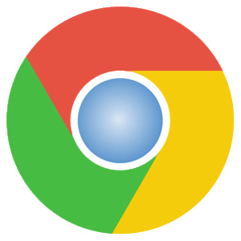
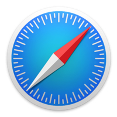
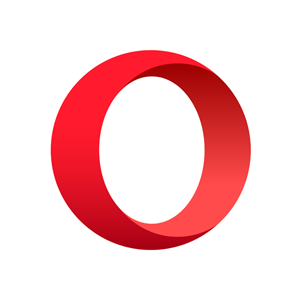

Существующие браузеры
- Google Chrome.
Это браузер, разрабатываемый компанией Google на основе свободного браузера Chromium и движка Blink[8] (до апреля 2013 года использовался WebKit). Первая публичная бета-версия для Windows вышла 2 сентября 2008 года, а первая стабильная — 11 декабря 2008 года. По данным StatCounter, Chrome используют около 300 миллионов интернет-пользователей, что делает его самым популярным браузером в мире.

- Apple Safari.
Это веб-браузер, разработанный корпорацией Apple и входящий в состав macOS и iOS. По состоянию на февраль 2019, занимает второе место по числу пользователей в мире.

- Opera.
Это веб-браузер и пакет прикладных программ для работы в Интернете, выпускаемый компанией Opera Software. Разработан в 1994 году группой исследователей из норвежской компании Telenor. С 1995 года — продукт компании Opera Software, образованной авторами первой версии браузера.

- Mozilla Firefox.
Это свободный браузер на движке Gecko, разработкой и распространением которого занимается Mozilla Corporation. Второй по популярности браузер в мире и первый среди свободного ПО. Браузер имеет особенный успех в некоторых странах, в частности, в Германии это самый популярный браузер с долей 34,27 % на июнь 2016 года. В России Firefox занимает третье место по популярности среди браузеров для ПК с долей 8,74 % пользователей на декабрь 2018 года, немного опережая Opera.
- Microsoft Internet Explorer.
программа-браузер, которую разрабатывала корпорация Microsoft с 1995 по 2015 год. Входила в комплект операционных систем семейства Windows вплоть до Windows 10, где её сменил Microsoft Edge. Согласно разным методам подсчёта, доля Internet Explorer среди пользователей варьировала между 24,64 % и 58,15 % (на январь 2017 года).
В нашем случае, браузер, которым мы пользуемся